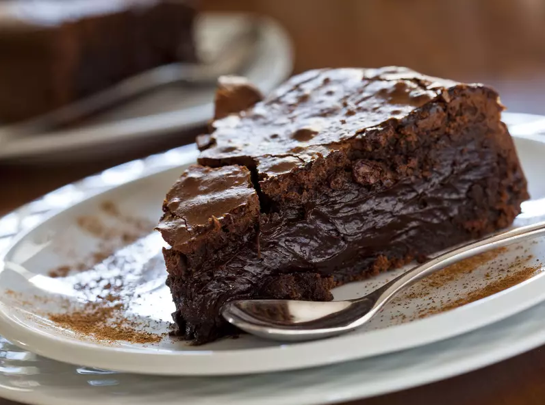

Gâteau au chocolat

Description
Cette recette vous apprendra à préparer un délicieux gâteau au chocolat au coeur fondant !
Ingrédients
- 100g de sucre en poudre
- 50g de farine
- 100g de beurre + une noix pour beurrer le moule
- 200g de chocolat pâtissier
- 3 oeufs
Préparation
- Préchauffez le four à 180°C, et faites fondre à feu doux le chocolat et le beurre dans une casserole.
- Mélangez la farine, les oeufs et le sucre dans un saladier.
- Ajoutez le chocolat fondu et mélangez pour obtenir une mixture homogène.
- Beurrez votre moule et ajoutez-y de la farine.
- Versez la pâte dans le moule.
- Faites cuire au four pendant environ 20 minutes.
- A la sortie, le gâteau ne semble pas assez cuit, c'est normal, laissez le refroidir, puis dégustez !